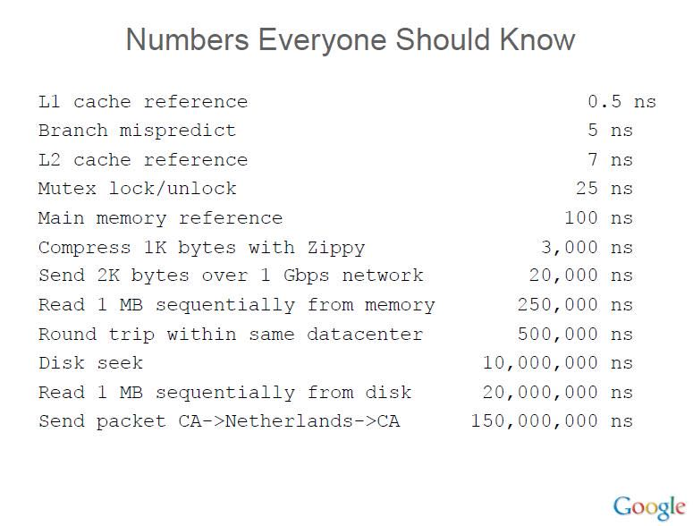

Numbers Everyone Should Know
Designs, Lessons and Advice from Building Large Distributed Systems @ladis-2009 jeff dean
- L1 cache reference 0.5 ns
- Branch mispredict 5 ns
- L2 cache reference 7 ns
- Mutex lock/unlock 100 ns
- Main memory reference 100 ns
- Compress 1K bytes with Zippy 10,000 ns
- Send 2K bytes over 1 Gbps network 20,000 ns
- Read 1 MB sequentially from memory 250,000 ns
- Round trip within same datacenter 500,000 ns
- Disk seek 10,000,000 ns
- Read 1 MB sequentially from network 10,000,000 ns
- Read 1 MB sequentially from disk 30,000,000 ns
- Send packet CA->Netherlands->CA 150,000,000 ns

Typical first year for a new cluster:
- ~0.5 overheating (power down most machines in <5 mins, ~1-2 days to recover)
- ~1 PDU failure (~500-1000 machines suddenly disappear, ~6 hours to come back)
- ~1 rack-move (plenty of warning, ~500-1000 machines powered down, ~6 hours)
- ~1 network rewiring (rolling ~5% of machines down over 2-day span)
- ~20 rack failures (40-80 machines instantly disappear, 1-6 hours to get back)
- ~5 racks go wonky (40-80 machines see 50% packetloss)
- ~8 network maintenances (4 might cause ~30-minute random connectivity losses)
- ~12 router reloads (takes out DNS and external vips for a couple minutes)
- ~3 router failures (have to immediately pull traffic for an hour)
- ~dozens of minor 30-second blips for dns
- ~1000 individual machine failures
- ~thousands of hard drive failures
- slow disks, bad memory, misconfigured machines, flaky machines, etc.
- Long distance links: wild dogs, sharks, dead horses, drunken hunters, etc.